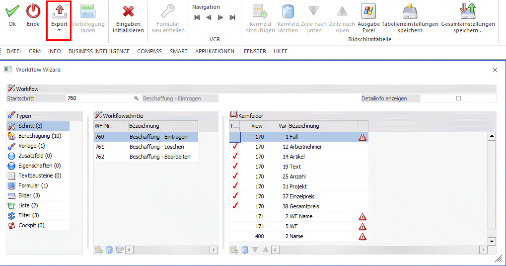
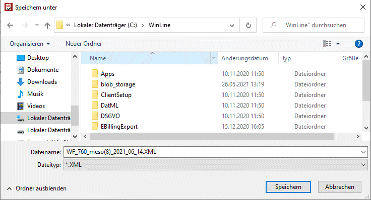
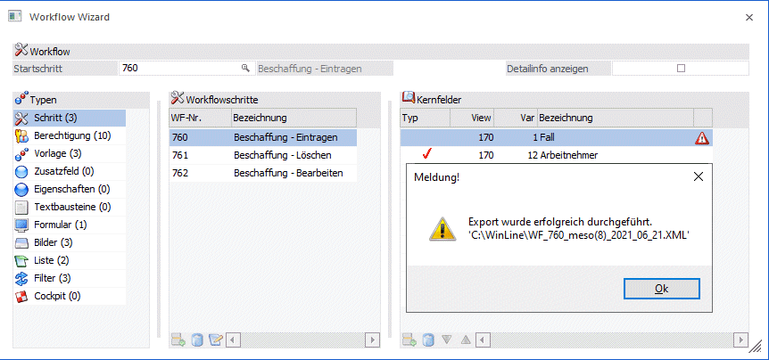
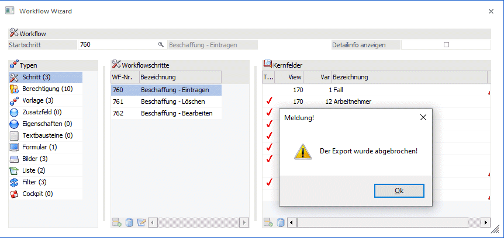
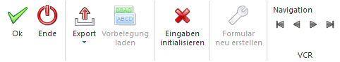
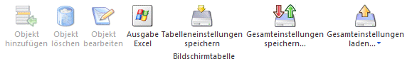

Im Modus "Export" können Workflows inkl. zugehöriger Objekte exportiert werden.

Hinweis
Im Bereich "Vorlagen" werden jene des Typs "CRM-Vorlagen" berücksichtigt. D.h. zu Workflowschritten in denen Vorlagen eines anderen Typs verwendet werden bzw. hinterlegt sind, müssen diese separat exportiert werden. In einem darauffolgenden Importlauf müssen diese Vorlagen entsprechend importiert und manuell den Workflowschritten zugewiesen werden.
Ab WinLine Edition 2022 -Version 12 erfolgt dies in einem eigenen CRM-XML-Format, u.a. mit einem eigenen eindeutigen Kennzeichen: <IMPORTMODE>GUID</IMPORTMODE>.
D.h. beim Export wird jedes Element mit einer eindeutigen GUID exportiert, sodass ein "Abgleich" im Zuge eines Imports durchgeführt werden kann.
Zum Export muss der Button "Export" gesetzt sein, und ein Startschritt angegeben werden. Durch Drücken des "OK"-Button wird der Export gestartet bzw. der "Speichern unter"-Dialog zur Angabe des Speicherortes sowie des Dateinamens geöffnet.

Der Vorschlag für den Dateinamen setzt sich wie folgt zusammen:
WF_"CRM-Startschrittnnummer"_"Benutzername/Benutzernummer in Klammer"_Tagesdatum.XML
Sowohl der erfolgreiche Export, als auch ein abgebrochener Export wird mit einer entsprechenden Meldung "bestätigt".


Ø Detailinfo anzeigen
Durch Aktivieren dieser Option werden zusätzliche Details zum jeweils gewählten Objekt in einem eigenen Fenster dargestellt.
Buttons

Ø Ok
Im Modus "Export" wird durch Drücken dieses Buttons der Export gestartet.
Ø Ende
Durch Anwählen des Ende-Buttons wird der Menüpunkt geschlossen
Ø Bearbeiten / Neu / Export / Import / Kopieren
Auswahl des gewünschten Modus
Ø Vorbelegung laden
Im Modus "Export" nicht aktiv.
Ø Eingaben initialisieren
Durch Drücken dieses Buttons werden alle Eingaben initialisiert, d.h. der Status des Menüpunktes dahingehend zurückgesetzt, als wäre der Menüpunkt neu geöffnet worden.
Ø Formular neu erstellen
Im Modus "Export" nicht aktiv.
Ø VCR-Buttons
Über die so genannten VCR-Buttons kann zwischen den Datensätzen/Workflow-Startschritten geblättert werden.
Tabellenbuttons

Ø Objekt hinzufügen
Im Modus "Export" nicht aktiv.
Ø Objekt löschen
Im Modus "Export" nicht aktiv.
Ø Objekt bearbeiten
Im Modus "Export" nicht aktiv.
Ø Ausgabe Excel
Durch Anwahl des Buttons "Ausgabe Excel" wird der Inhalt der Tabelle nach Microsoft Excel übergeben.
Ø Tabelleneinstellungen speichern
Die Spalten einer Tabelle können grundsätzlich an beliebige Positionen verschoben, bzw. in der Breite entsprechend angepasst werden. Durch Anwahl des Buttons "Tabelleneinstellungen speichern" werden die Einstellungen benutzerspezifisch gespeichert und bei dem nächsten Aufruf des Programmpunktes wieder vorgeschlagen.
Ø Gesamteinstellungen speichern…
Im Gegensatz zu "Tabelleneinstellungen speichern" können mit "Gesamteinstellungen speichern" mehrere Tabellenaufbauten gespeichert und nach Wunsch geladen werden. Zusätzlich werden Sonderfunktionen der Tabelle (z.B. "Spalte gruppieren") ebenfalls bei der Speicherung bedacht.